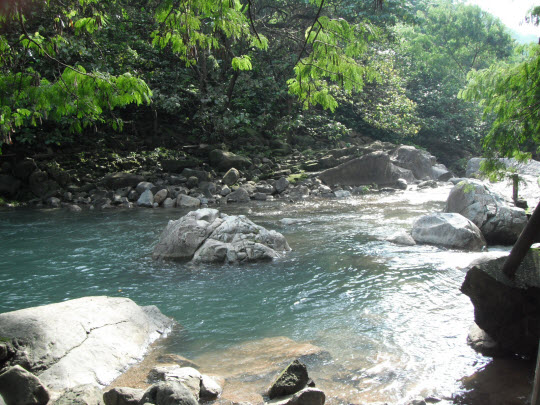

照潭徑及曹公潭就在我家附近, 走一會便到達, 是我的主要晨運路線, 也是我最喜愛的晨運地點。這裡的環境優美, 空氣清新, 沒有公園晨運客的喧嘩聲, 十分寧靜。
其實從我兒時開始已經常常到曹公潭這一帶遊玩及嘻水, 主要是有一位姓馬的小學同學(馬仔)就是住在曹公潭旁山腰的木屋。在夏天季節的時候, 我們幾位「死黨」在放學後經常到馬仔家中旁的溪澗學習游泳。可惜我天生可能忌水, 到現在還不懂游泳, 只學會在水上浮起短短的幾秒時間。
回想起來, 當時從學校走到馬仔家的路途頗為遙遠及曲折。我就讀的小學舊址就在現時荃灣綠楊新邨的地方, 沿學校旁的村莊羊腸小徑向下走, 不一會便到達西樓角村的入口; 穿過西樓角村, 抵中國染廠, 只見七彩繽紛、熱氣沸騰的工業廢水不斷從染廠滾滾流入河中。整條河流一片煙霧瀰漫, 有如溫泉一樣, 配合紅色、綠色、藍色、黃色等等色彩的混濁污水, 是當年這裡的一大「奇觀」。接著沿熱氣沖天河流旁的小徑走, 很快便抵曹公潭村的範圍, 從這裡沿山路向上走十多分鐘便到達馬仔家了, 全程約四十分鐘。
當年從西樓角村到曹公潭的山腰, 遍佈簡陋房屋, 雞犬相聞。如今所有村落已經荒廢, 只餘下一些木屋零散的分佈在山中。每當黃昏時分, 看見縷縷炊煙從山中青蔥樹林某處冒出, 便知道那裡仍然有人居住。
今天就拿起相機, 記錄了往曹公潭瀑布及照潭徑晨運的路程。
曹公潭瀑布的入口就在馬路旁, 十分明顯。很多市民每天都匆匆經過這裡, 但大部份都不知道小徑後面的優美風光。
走一會便到達曹公潭瀑布的入口。

展現眼前是一片青蔥樹林 十分舒服。
沿山旁的小徑走, 環境十分優美。
走一會, 已經看見層層疊疊的流水。

繼續沿山徑走, 流水的音符, 已遍佈整個山谷。
抵一分路, 如沿左邊的石階向上走, 便可抵大帽山溪澗, 即荃錦公路、大帽山溪澗、西竺林襌院晨運路線其中的一段。不過, 修建的山路就只有這短短看見的一段石階, 只可靠感覺地穿越叢林往上爬, 並不好走, 而且有點危險, 如果沒有走錯路, 約二十多分鐘便可抵達大帽山山腰的大欖涌引水道。
優美的瀑布, 總教人忍不住停下腳步來細心欣賞。
繼續向前走, 這裡空氣十分清新。
愈是接近瀑布, 水聲愈是清脆。

繼續向前走。
瀑布的全貌展現腳下, 令人心曠神怡。
繼續沿小徑走。
沿途可從不同角度觀看瀑布。
瀑布的水奔流到潭中後, 接著沿山谷慢慢的向下流。
繼續向前走。
到達一分叉路。右邊小路通往一小村莊 (潭頂新村), 再沒有路可以向前走了。村莊前有很多狗隻在路中看守, 必須加倍小心。
左邊小路是通往山中的田野, 十分好走。不過, 今天就走到這裡, 不打算向前走了。
掉頭循原路走。今天的天氣很好, 不如走到瀑布下游的山澗遊玩一會。
不一會便走到了瀑布下游的山澗, 心境豁然開朗。
擁抱大自然的感覺真是十分奇妙, 讓人可以暫時忘記世間所有煩惱。
溪水清澈見底。 潭中還有很多魚兒在游來游去, 樂也悠悠, 令人羨慕。
沿溪流往下走。
這裡是溪澗的盡頭, 也是照潭徑的尾段。
河水從這裡流往愉景新城(中國染廠舊址), 最後進入大海。
接著我在照潭徑緩步大約一小時, 便帶著愉快心情返回家中, 結束了這一天的晨運。